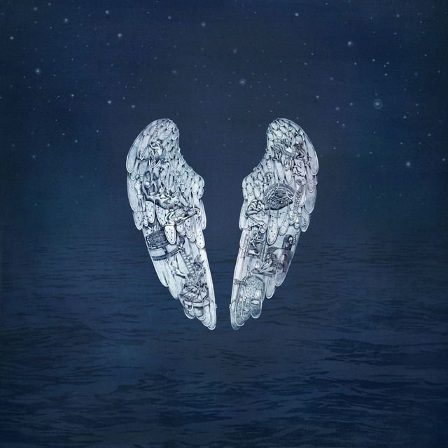

Indie

Go Slow by Deca Joins
Independent music (also commonly known as indie music or simply indie) is music that is produced independently from commercial record labels or their subsidiaries, a process that may include an autonomous, do-it-yourself approach to recording and publishing. The term indie is sometimes used to describe a genre (such as indie rock and indie pop), and as a genre term, "indie" may or may not include music that is independently produced, and many independent music artists do not fall into a single, defined musical style or genre and create self-published music that can be categorized into diverse genres. The term ‘indie’ or ‘independent music’ can be traced back to as early as the 1920s after it was first used to reference independent film companies but was later used as a term to classify an independent band or record producer.
R&B

The Long Way Home by Aaron Taylor
The term "rhythm and blues," often called "R&B," originated in the 1940s when it replaced "race music" as a general marketing term for all African American music, though it usually referred only to secular, not religious music. The term first appeared in commercial recording in 1948, when RCA Victor records began using "blues and rhythm" music as a descriptor for African American secular songs. The migration of African Americans to urban centers in the Northeast and Midwest during the early twentieth century helped to bring various regional styles of African American music together to influence one another. The migration also created new markets for these styles of music. Early on the term "rhythm and blues" was used for boogie woogie, African American swing, jazz, and blues. All of these styles influenced the development of what is called rhythm and blues today.
Jazz

Portrait in Jazz by Bill Evans
Jazz is a music genre that originated in the African-American communities of New Orleans, Louisiana in the late 19th and early 20th centuries, with its roots in blues and ragtime. Since the 1920s Jazz Age, it has been recognized as a major form of musical expression in traditional and popular music.
Rock

1967-1970 by The Beatles
Rock music is a broad genre of popular music that originated as "rock and roll" in the United States in the late 1940s and early 1950s, developing into a range of different styles in the mid-1960s and later, particularly in the United States and United Kingdom. It has its roots in 1940s and 1950s rock and roll, a style that drew directly from the blues and rhythm and blues genres of African-American music and from country music. Rock also drew strongly from a number of other genres such as electric blues and folk, and incorporated influences from jazz, classical, and other musical styles.
Pop
Ghost Stories by Coldplay
Pop music is a genre of popular music that originated in its modern form during the mid-1950s in the United States and the United Kingdom. The terms popular music and pop music are often used interchangeably, although the former describes all music that is popular and includes many disparate styles. During the 1950s and 1960s, pop music encompassed rock and roll and the youth-oriented styles it influenced. Rock and pop music remained roughly synonymous until the late 1960s, after which pop became associated with music that was more commercial, ephemeral, and accessible.
Soul
What's Going On by Marvin Gaye
Soul music (often referred to simply as soul) is a popular music genre that originated in the African American community throughout the United States in the late 1950s and early 1960s. It has its roots in African-American gospel music, rhythm and blues. Soul music became popular for dancing and listening, where U.S. record labels such as Motown, Atlantic and Stax were influential during the Civil Rights Movement. Soul also became popular around the world, directly influencing rock music and the music of Africa. It also had a resurgence with artists like Erykah Badu under the genre neo-soul.
K-Pop

Thursday's Child by Tomorrow X Together
K-pop, short for Korean popular music, is a form of popular music originating in South Korea as part of South Korean culture. It includes styles and genres from around the world, such as pop, hip hop, R&B, experimental, rock, jazz, gospel, reggae, electronic dance, folk, country, disco, and classical on top of its traditional Korean music roots. The term "K-pop" became popular in the 2000s, especially in the international context. The Korean term for domestic pop music is gayo, which is still widely used within South Korea. While "K-pop" can refer to all popular music or pop music from South Korea, it is colloquially often used in a narrower sense for any Korean music and artists associated with the entertainment and idol industry in the country, regardless of the genre.
Funk

Cassa Nova by Sunset Rollercoaster
Funk is a music genre that originated in African American communities in the mid-1960s when musicians created a rhythmic, danceable new form of music through a mixture of various music genres that were popular among African Americans in the mid-20th century. It de-emphasizes melody and chord progressions and focuses on a strong rhythmic groove of a bassline played by an electric bassist and a drum part played by a percussionist, often at slower tempos than other popular music. Funk typically consists of a complex percussive groove with rhythm instruments playing interlocking grooves that create a "hypnotic" and "danceable" feel. Funk uses the same richly colored extended chords found in bebop jazz, such as minor chords with added sevenths and elevenths, or dominant seventh chords with altered ninths and thirteenths.
Classical
Ballade No. 1 in G Minor, Op. 23 by Frederic Chopin
Classical music generally refers to the art music of the Western world, considered to be distinct from Western folk music or popular music traditions. It is often characterized by formality and complexity in its musical form and harmonic organization, particularly with the use of polyphony. A foundational component of Western Culture, classical music is frequently seen from the perspective of individual or groups of composers, whose compositions, personalities and beliefs have fundamentally shaped its history.